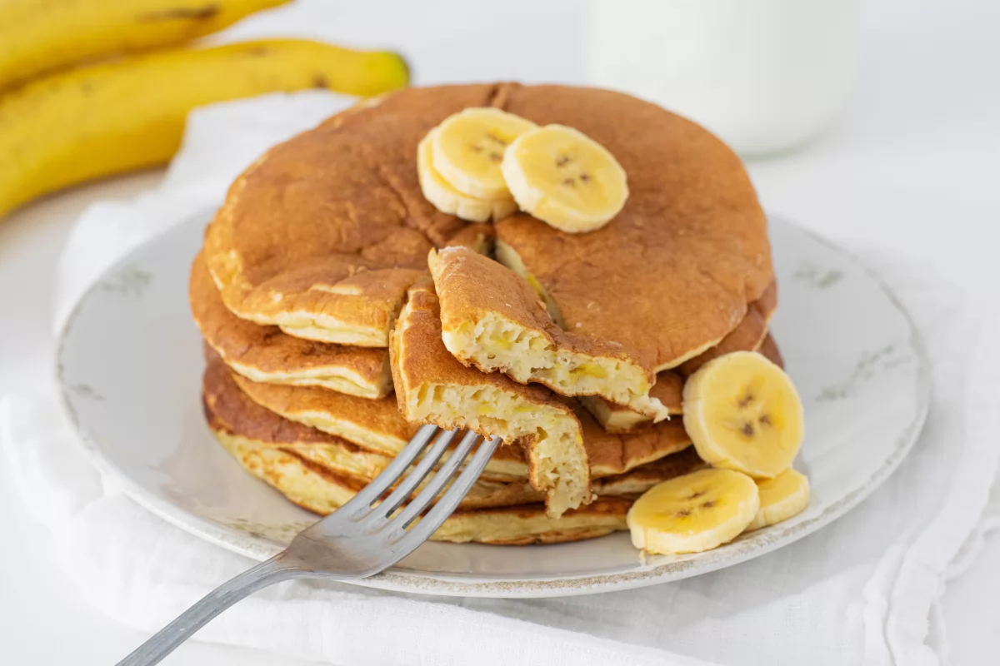

Tortitas de platano

Las tortitas de plátano es un desayuno o merienda genial. Se
preparan en un periquete y resultan un bocado delicioso.
Ingredientes
| Cant |
Producto |
| 2 |
Platanos |
| 1 |
Huevo |
| 120 g |
Harina de trigo |
| 1 cdta |
Levadura quimica |
| 180 ml |
Leche |
| Cant necesaria |
Mateca o aceite |
Preparación
- Pelar y machacar los platanos en un bol.
- Agregar el huevo y mezclar bien.
- Añadir 120 gramos de harina de trigo y 1
cucharadita de levadura química. Mezclar hasta
integrar.
- Por último, verter 180 g de leche entera.
- Mezclar hasta conseguir una masa homogénea y reservar
durante 5 minutos. Mientras tanto, poner una sartén pequeña
a fuego medio y engrasar con un poco de mantequilla o aceite de oliva.
- Con la ayuda de un cucharón verter una ración de masa en la sartén y dejar
que se cocine hasta que la superficie comience a llenarse de burbujas.
- Voltear y dejar cocinar la tortita un par de minutos más por el otro lado,
hasta que se cocine por completo.
- Repetir hasta terminar con toda la masa y servimos.